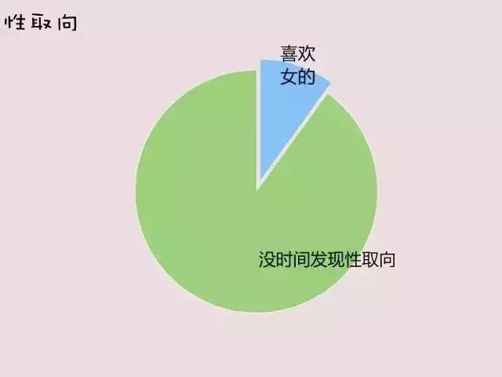

程序员 520 表白方式
1、按 ctrl+f 然后输入 9 99669999996669999996699666699666999966699666699 99699999999699999999699666699669966996699666699 9966999...

20 张图表达程序员的心酸
「1」上司に命じられて、退職したばかりの同僚のプロジェクトを引き継ぐことになった… 「2」彼らが私にすべてのアプリ機能のテストを要求してきたとき 「3」仕事を上がろうとしたその瞬間、またテスターからバグの報告が舞い込んできた… …

程序员专属手机壁纸来了。。。
まずは完成イメージを見てみましょう（ちょっとかっこいいですよね？）： 対応しているいくつかのサイズを見てください。本当に機種が多すぎますが、おそらくほとんどの人のニーズをカバーしていると思います： 本記事に対応する画像…
那些年，被大众误解了的码农们
1.大概ほとんどのプログラマーは、才能を活かしきれていないジョーク好きで、ちょっとしたきっかけですぐに下ネタに走る（ps: 天才プログラマーは生まれながらのベテランドライバー） 下ネタ発動 ベテラン、待ってくれ！ 2.技…

九张图带你了解全宇宙最神秘的团体——程序员
性的指向 昇給したいときはどうする？ 会社を選ぶとき、主に何を見る？ 最も孤独な瞬間 プログラマー同士が会ったら何を話す？ 人生の理想 最も聞きたくない言葉…

代码神注释鉴赏，喜欢拿去用
魔性图 /** * 瓦瓦 ...
程序员笑话集：bug跟蚊子的相似之处
1 バグと蚊の共通点： 1、どこに隠れているか分からない。 2、何匹いるのか分からない。 3、いつも寝ようとする瞬間に現れる。 2 A：最近『ワンパンマン』を見ているんだけど…
程序员,如果一小时后永久断网,你会干嘛?
インターネットは私たちの生活の隅々まで浸透している。そのため、私たちはこう考えずにはいられない。もしある日、ネットが途切れてしまったらどうすればいいのだろうか？ 英国のCable.co.ukはかつて、ある興味深い「切断…

给程序员的几条建议，精彩配图
1.よく考えてから、コードを書く 入行したばかりの初心者は、自分の能力を示すために、要件を受け取るやいなや待ちきれずにコードを書き始めてしまうが、それは大変なタブーだ！ 私の考えでは、実際にコードを書く時間はほんの…

如果各个程序语言是个人的话……
もし各プログラミング言語が人間だとしたら、Pythonは妖怪だ。 他人の目に映るプログラミング VS 現実 こんなタトゥーはとてもかっこよく、意味論的にも正しい Cって最強なのか？…